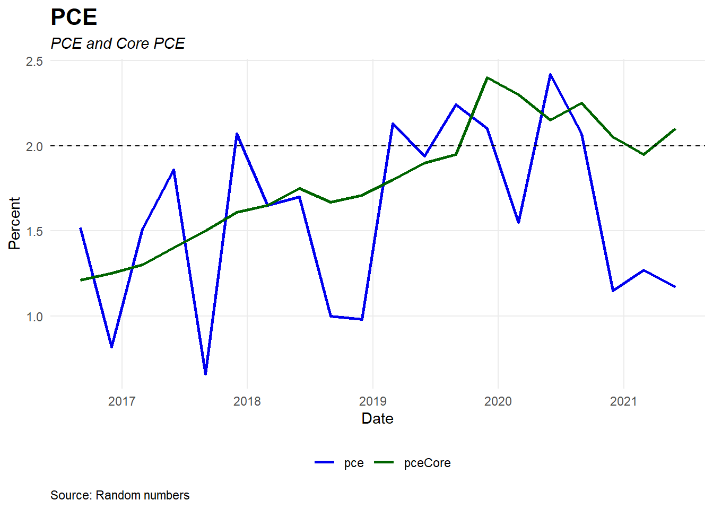
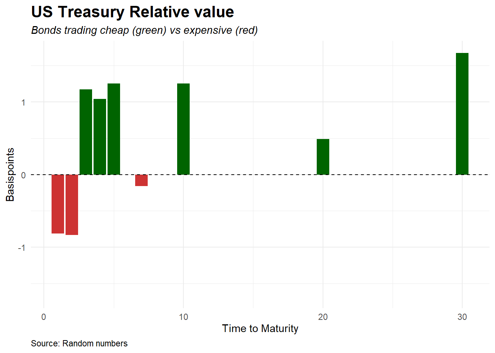

1 Plots
1.1 Line Plots
1.1.1 Basic Line Plot
#bookdown::render_book("index.Rmd")
#```{r setup, include=FALSE}
#knitr::opts_chunk$set(echo = TRUE)
#library(tidyverse)
#```
#library(tidyverse)
#####################################################################################################
### Create sample dataframe and prepare for plotting
#####################################################################################################
df <- tibble(
date = seq(as.Date('2016-09-01'), as.Date('2021-08-31'), by = 'quarter')-1,
gdp = 3 + round(runif(20, min=-0.10, max=0.20),2),
pceCore = c(1.21, 1.25, 1.30, 1.40, 1.50, 1.61, 1.65, 1.75, 1.67, 1.71, 1.80, 1.90, 1.95, 2.40, 2.30, 2.15, 2.25, 2.05, 1.95, 2.10),
pce = pceCore + round(runif(20, min=-1, max=0.5),2),
us10y = c(1.5, 1.55, 1.57, 1.60, 1.68, 1.65, 1.69, 1.75, 1.81,1.79, 1.74, 1.71, 1.66,1.70, 1.75, 1.73, 1.69, 1.61, 1.59, 1.55),
us2y = us10y -0.05 + round(runif(20, min=-0.075, max=0.075),2)
)
df <- pivot_longer(df, #create longer dataframe, dplyr
-date,
names_to = "variable",
values_to = "values")
variables = c("pce", "pceCore")
plotData <- df %>%
filter(variable %in% variables)
#####################################################################################################
### Plot
#####################################################################################################
#Set color palette
color_palette <- c("blue2", "darkgreen", "darkgoldenrod1", "brown1", "azure4",
"darkorchid3", "coral1", "#8E9CA3", "#556670", "#000000")
plot <- ggplot(plotData, aes(x = date, y = values, group = variable, color = variable)) +
geom_line(size = 1)+
geom_hline(yintercept = 2, linetype = "dashed")+
theme_minimal() +
scale_colour_manual(values = color_palette)+
theme(legend.position="bottom",
legend.title = element_blank(),
plot.caption=element_text(hjust=0),
plot.subtitle=element_text(face="italic"),
plot.title=element_text(size=16,face="bold"))+
theme(panel.grid.minor = element_line(colour = "white"))+
labs(x="Date",y="Percent",
title="PCE",
subtitle="PCE and Core PCE",
caption="Source: Random numbers")
plot 
1.2 Scatterplots
#library(tidyverse)
#####################################################################################################
### Create sample dataframe
#####################################################################################################
df <- tibble(
timeToMaturity = c(1,2,3,4,5,7,10,20,30),
bondName = paste("UST", timeToMaturity, sep=""),
rate = c(1.5,1.45,1.25,1.35,1.60,1.75,1.80,2.15,2.2),
relativeValue = round(runif(9, min=-2, max=2),2)
)
#####################################################################################################
### Plot
#####################################################################################################
plot <- ggplot(df, mapping = aes(x = timeToMaturity, y = rate)) +
geom_point(size = 3) + guides(fill = FALSE)+
theme_minimal() +
theme(legend.position="bottom",
legend.title = element_blank(),
plot.caption=element_text(hjust=0),
plot.subtitle=element_text(face="italic"),
plot.title=element_text(size=16,face="bold"))+
labs(x="Time to Maturity",y="Percent",
title="US Treasury",
subtitle="US Treasury",
caption="Source: Random numbers")
plot 1.3 Bar Charts
Bar Chart with different colors for positive and negative numbers
#library(tidyverse)
#####################################################################################################
### Create sample dataframe
#####################################################################################################
df <- tibble(
timeToMaturity = c(1,2,3,4,5,7,10,20,30),
bondName = paste("UST", timeToMaturity, sep=""),
rate = c(1.5,1.45,1.25,1.35,1.60,1.75,1.80,2.15,2.2),
relativeValue = round(runif(9, min=-2, max=2),2)
)
df <- df %>%
mutate(pos = relativeValue > 0) #Add for showing different colors for neg or pos
#####################################################################################################
### Plot
#####################################################################################################
plot <- ggplot(df,
mapping = aes(x = timeToMaturity, y = relativeValue, fill = pos)) +
geom_col() + guides(fill = FALSE) +
theme_minimal() +
geom_hline(yintercept = 0, linetype = "dashed")+
theme(legend.position="bottom",
legend.title = element_blank(),
plot.caption=element_text(hjust=0),
plot.subtitle=element_text(face="italic"),
plot.title=element_text(size=16,face="bold"))+
labs(x="Time to Maturity",y="Basispoints",
title="US Treasury Relative value",
subtitle="Bonds trading cheap (green) vs expensive (red)",
caption="Source: Random numbers")+
scale_fill_manual(values = c("brown3", "darkgreen"), guide = FALSE)+ #Setting colors for bars
scale_y_continuous(limits=c(-max(abs(df$relativeValue)),max(abs(df$relativeValue)))) ##Keep pos and neg y axis same length
plot 